Distributed systems fundamentalsCAPConsistencyIdempotency keysDistributed systems
Your bar: redraw the core of this field on a whiteboard from memory — and reason about any
async, multi-service system without flinching. Almost everything below is a response to one hard
truth, so every level is built to be seen and redrawn, not read. Grounded in Kleppmann's
Designing Data-Intensive Applications1 and the Cambridge
Distributed Systems lectures.2
One truth holds the whole field. Every technique below is a strategy for living with it:
When a remote call goes silentyou cannot know if it failed, succeeded, or runs onso you build to be safe despite thatnever certain of it
Memorise this banner. Every level below is a tactic for making good decisions despite this permanent uncertainty.
1
The One Hard Truth — you can never know
Partial failure: some parts work while others fail, and the working parts can't tell which is which.
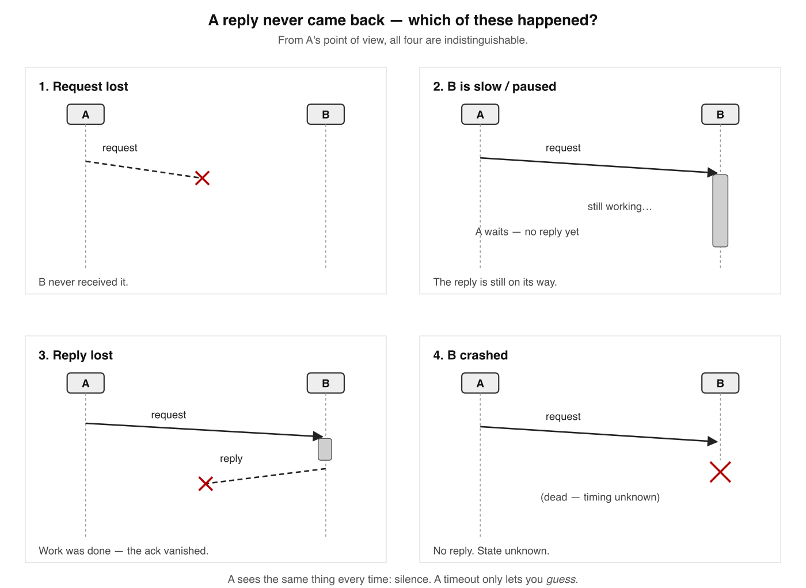
The four indistinguishable causes. A request that draws no reply has exactly these four explanations — and from A's vantage point every one of them looks the same: silence.
Is A set of nodes that interact only by messages over a network, where failure is partial, not total-and-knowable.
Why it's hard A single machine crashes with a stack trace. A distributed node dies silently while everyone else runs on, unaware.
The trap In causes ③ & ④ the work already happened — the charge went through, the row was written. "Just retry" is loaded.
Two Generals No finite exchange of messages makes two parties certain they agree over a lossy channel. Proven impossible — not hard.
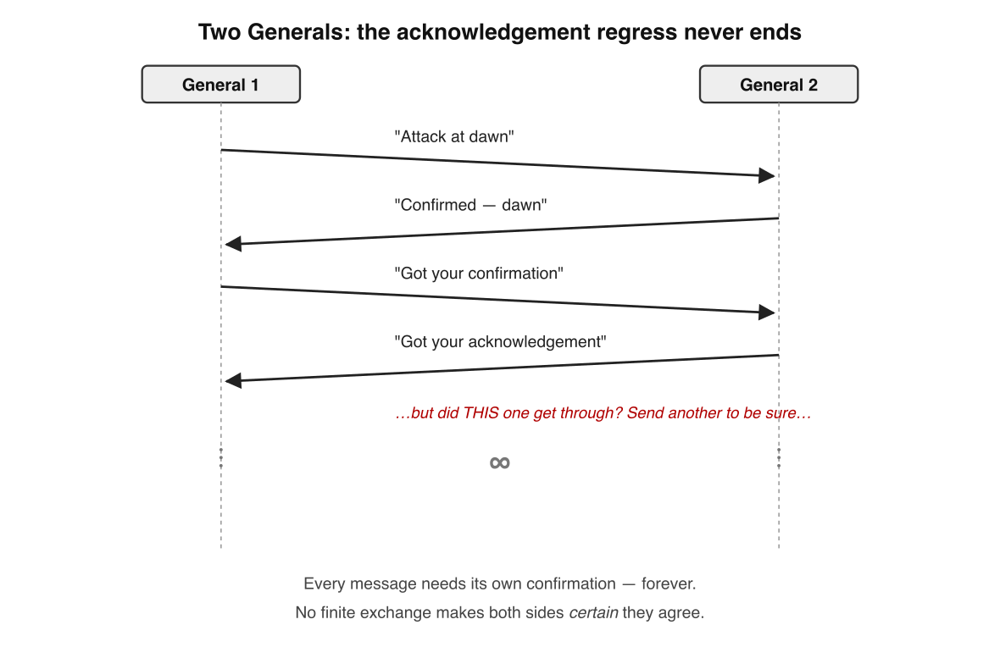
The acknowledgement regress. Each message could be the one that's lost, so each needs its own confirmation, without end. Certainty is never reached in a finite number of messages. (Two Generals, Kleppmann, Cambridge Lecture 2.)
Timeouts are a guess, not a truth. A timeout doesn't detect failure; it declares it — and there is no provably-correct value for N:
A real network is asynchronous: no guaranteed bound on message delay or pause length. With no bound, no timeout can ever be provably correct. (DDIA Ch. 8, "Timeouts and Unbounded Delays.")
✗ "TCP is reliable, so my request is safe"
✓ TCP ACK = "kernel got bytes," not "app did the work" — the four causes live at the application layer
🧠 Memory rule: When a remote call goes silent you cannot tell lost request · slow node · lost reply · dead node apart — and the work may already be done.
Memory check
Four indistinguishable causes of no reply? → lost request · node slow/paused · lost reply · node dead
What is a timeout, really? → a guess that declares failure; it doesn't detect it
What does Two Generals prove? → certain agreement over a lossy channel is impossible
2
Delivery guarantees & idempotency
The fix for the double-charge: pick at-least-once, then make processing duplicate-proof.
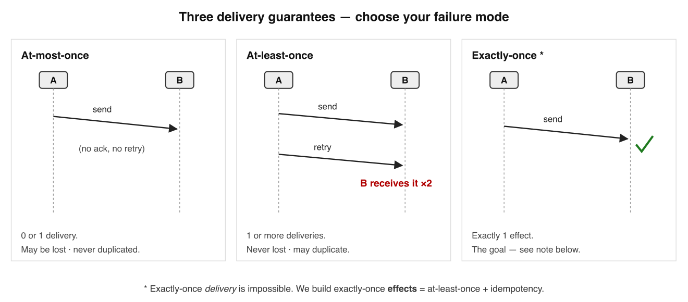
The three delivery guarantees. Send-and-forget may lose the message; retry-until-acked may duplicate it; exactly-once is the goal you can't get at the delivery layer.
Guarantee
Promise
The price · where you see it
At-most-once
send & forget; 0 or 1 times
may be lost, never duplicated · metrics, telemetry
At-least-once
retry until acked
never lost, may duplicate · Kafka, SQS, webhooks (the default)
Exactly-once delivery
once, period
impossible over an unreliable network — see below
An unacked send leaves you two moves: resend (risk a duplicate → at-least-once) or don't (risk a loss → at-most-once). There is no third door — it's Two Generals in work clothes. So stop chasing exactly-once delivery and build exactly-once effects.
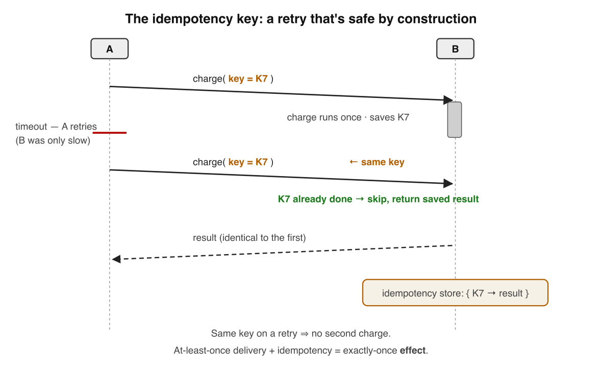
The idempotency key. The timed-out retry carries the same key; the server recognises it, returns the original result, and does not charge again. At-least-once + idempotency = exactly-once effect.
Idempotent Doing it many times = doing it once. balance=100, DELETE /orders/42, "mark #7 paid."
Not idempotentbalance=balance+10, POST /orders, "increment counter," "append a row."
Idempotency key Client mints one UUID per logical op, reuses it on every retry; server stores key→result, replays the saved result on repeats. (Stripe's Idempotency-Key.)
Dedup (receiver side) Broker tags each message; consumer records processed IDs and drops repeats — exactly-once within the dedup window.
✗ "Idempotency also protects me from reordering"
✓ Idempotency defends against duplicates only; reordering needs ordering (Lessons 3–4) or commutative ops
🔁 Memory rule: Exactly-once delivery is a myth; ship at-least-once + idempotency = exactly-once effects.
Memory check
The default real-world guarantee? → at-least-once (may duplicate)
Who generates the idempotency key, and when? → the client, once per logical op, reused on retries
3
No global clock — logical time
Stop asking when things happened on a wall clock; ask which one caused the other.
Quartz drifts ~200 ppm (≈17 s/day); NTP narrows but can't share an instant and can step backwards. Wall-clock timestamps from different machines are not comparable for ordering. (DDIA Ch. 8, "Unreliable Clocks".)
Clock kind
Answers
Failure mode
Physical / time-of-day
"what wall-clock instant?"
skew, drift, backward jumps
Monotonic
"how much elapsed locally?"
meaningless across machines
Logical
"what is the order?"
carries no real-time meaning
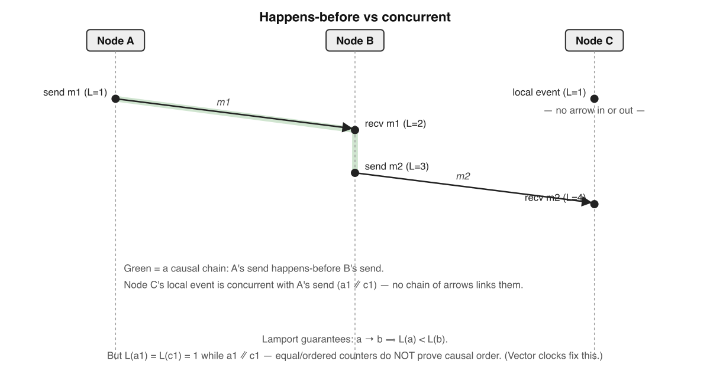
Happens-before vs concurrent. B sends m2 only after receiving m1, so send(m1) → recv(m1) → send(m2); C's event is reachable from neither — concurrent. (Lamport, 1978.)
Happens-before (a → b) Same node & earlier; or send→receive of one message; plus transitivity. A partial order.
Concurrent (a ∥ b) Neither reaches the other — causally independent, not "same wall-clock time."
Lamport clock One integer; recv: L=max(L,t)+1. Gives a→b ⟹ L(a)<L(b) — but not the converse. Can't detect concurrency.
Vector clock One counter per node; compare element-wise. a→b iff V(a)<V(b); incomparable = concurrent. Cost: O(N) per message. (Dynamo.)
✗ "NTP syncs clocks, so timestamps order events"
✓ NTP error is tens of ms and can jump backward; use logical time for ordering
⏱ Memory rule: There is no global clock — for ordering, throw away time and track cause: happens-before.
Memory check
Why are cross-machine timestamps unsafe to order? → skew can make the later event carry the smaller stamp
What does a Lamport clock fail to do? → tell whether two events were concurrent or causal
What does a vector clock add? → an exact concurrent-vs-causal test
4
Order & causality — the broadcast ladder
Pick the cheapest rung that still satisfies the requirement — that choice is the whole art.
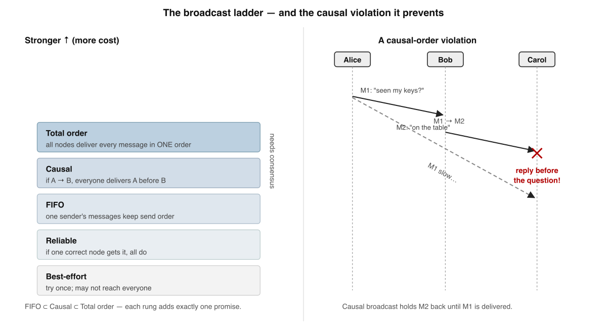
The broadcast-guarantee ladder, and the causal violation it prevents. Each rung adds exactly one ordering promise; the causal rung is the one that stops a reply from overtaking the question it depends on.
Rung
Adds this promise
Concretely
Best-effort
nothing — try once
sender may crash mid-send; some get it, some don't
Reliable
all-or-nothing
if any correct node delivers, every correct node eventually does
FIFO
per-sender order
one sender's messages arrive in send order
Causal
happens-before order
if A→B, every node delivers A before B
Total order
one global sequence
all nodes deliver all messages in the same order
Causal order is enforceable locally (vector-clock metadata, no agreement). Total order requires nodes to agree on one sequence — that's consensus, the hard problem. (Schneider 1990; DDIA Ch. 9.)
✗ "The events came out of order — make it strictly ordered"
✓ First ask: FIFO, causal, or total? Total order needs consensus; don't pay for it unless required
📡 Memory rule: FIFO ⊂ causal ⊂ total; need every replica on one order → you need total-order broadcast → you need consensus.
Memory check
Which rung stops a reply overtaking its question? → causal
Why is total order the expensive jump? → nodes must agree on order of concurrent messages = consensus
State-machine replication needs what input? → same commands, same order (a total-order log)
5
Replication — leader, multi-leader, leaderless
Keep copies useful-agreement-close despite the lost messages and timeouts you already accepted.
Architecture
Who takes writes
Key trade-off
Single-leader
one leader; followers replay its log
no write conflicts (one serializer); leader is a SPOF → failover & split brain
Multi-leader
a leader per DC / per device
local fast writes; conflicts must be resolved after the fact
Leaderless (Dynamo)
any replica; client uses quorums
no leader; freshness via R + W > N; needs read-repair / anti-entropy
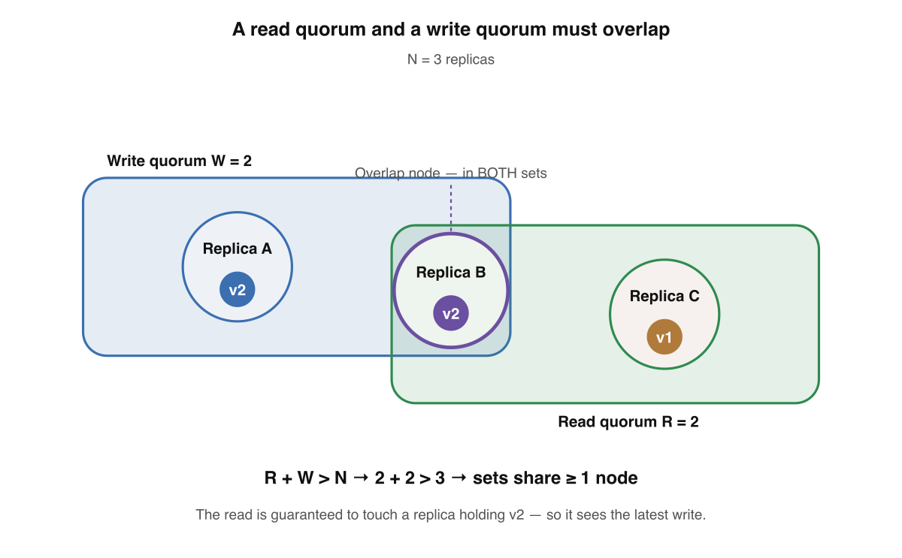
A read quorum and a write quorum must overlap by ≥1 node. With N=3, W=2, R=2 (R+W=4>3), whichever two the read picks, at least one was in the write set — so the read sees the latest value. W and R are tunable knobs, not fixed laws. (Dynamo, 2007.)
Why replicate Fault tolerance · latency (replica near the user) · throughput (parallel reads). Name which one you're buying.
Sync vs async Synchronous = durable but one slow follower blocks; async = fast but a leader crash loses acked writes. Most run semi-sync.
A contract for what a read may return. Stronger = fewer surprises, more coordination, more latency.
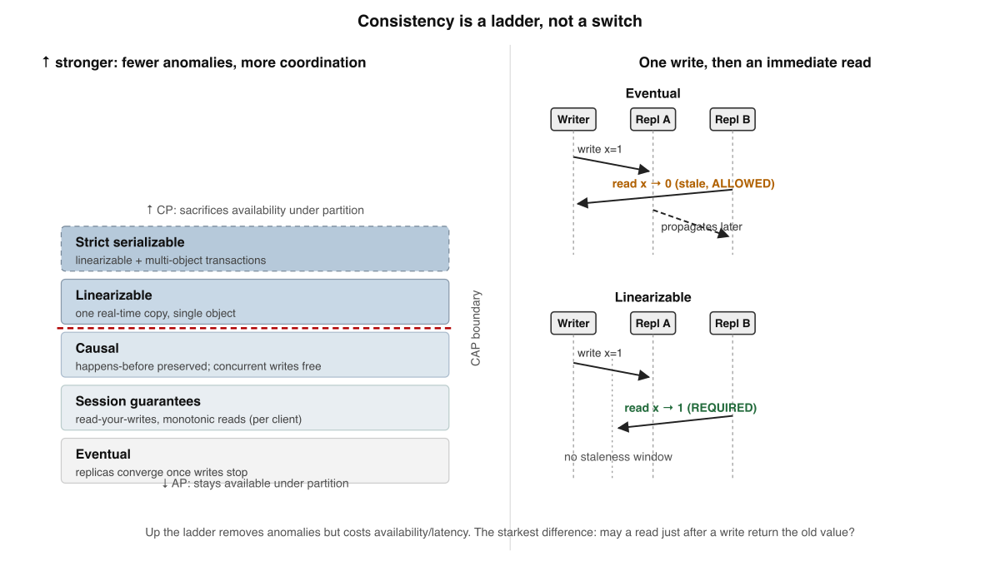
Consistency is a ladder, not a switch. From eventual (weak) up to linearizable (strong). A stronger model permits fewer behaviours — easier to program against, more expensive to provide. (Jepsen, "Consistency Models".)
Model
Promise
Cost / note
Eventual
if writes stop, replicas converge
any past/stale value meanwhile; cheapest, stays available (AP)
Session (RYW, monotonic reads)
per-your-client promises
kills the anomalies users notice; pin to an up-to-date replica
Causal
cause-and-effect seen in order everywhere
strongest model that stays available under partition; concurrent writes unordered
Linearizable
acts like one copy; recency, real-time order
no staleness window — but needs coordination (consensus/quorum) → latency
"Consistency" is overloaded CAP's C (recency of single-object reads) ≠ ACID's C (transaction invariants) ≠ serializability (multi-object). Keep them apart.
The rule of thumb Buy the strongest model your correctness actually needs and not a rung more. Reserve linearizability for locks, leader election, unique constraints.
✗ "Linearizable = serializable"
✓ Linearizable is recency for single objects; serializable is isolation across transactions — different words
📈 Memory rule: Climb only as high as correctness demands — eventual → session → causal → linearizable, each rung costs coordination.
Memory check
Strongest model that stays available under partition? → causal
Cheap per-client fix for "comment vanished"? → session guarantee: read-your-writes
Why does linearizability cost latency even with no partition? → a node must coordinate to be sure it isn't stale
7
CAP & PACELC — the real trade-offs
CAP isn't "pick 2 of 3." P is forced on you; the only choice is C-vs-A during a partition.
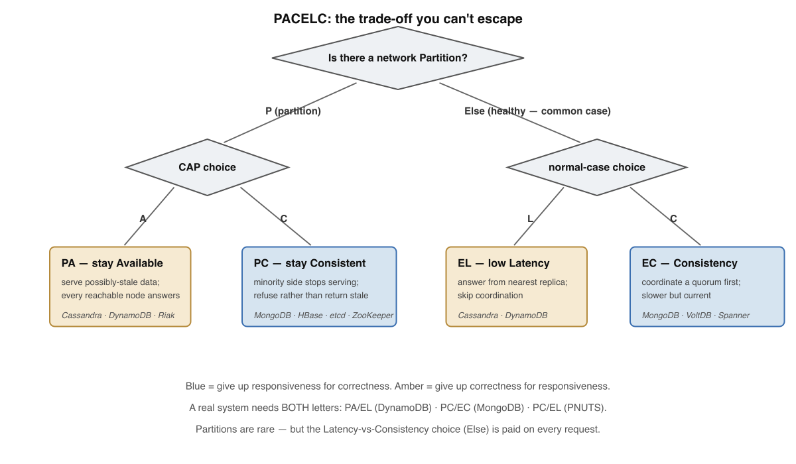
The PACELC decision tree. A partition forces the CAP choice (PA vs PC); but the far more common no-partition state still forces a Latency-vs-Consistency choice (EL vs EC). Most systems are PA/EL or PC/EC. (Abadi, IEEE Computer 2012.)
C / A / P C = linearizability · A = every non-failed node answers (not "fast") · P = partition tolerance — not optional, partitions happen.
Under partition CP refuses/blocks on the minority side (etcd, ZooKeeper, Mongo default). AP answers with possibly-stale data (Cassandra, DynamoDB, Riak).
PACELC if-Partition: A vs C. Else: L vs C — strong consistency costs round-trips to a quorum even on a healthy network.
Tunable per-request Cassandra/Dynamo let one cluster be EL for feeds and EC for balances (consistency level / ConsistentRead).
✗ "You pick two of C, A, P" / "CAP describes my system always"
✓ P is mandatory → only choose C-or-A under partition; CAP is silent on healthy networks — that's the hole PACELC fills (Brewer 2012)
⚖️ Memory rule:if Partition → A or C; Else → Latency or Consistency. Coordination buys consistency and always costs latency.
Memory check
When does CAP force the C-vs-A choice? → only during a network partition
What does a CP system do under partition? → sacrifice availability to keep data consistent
What does PACELC add over CAP? → the latency-vs-consistency trade on healthy networks
8
Consensus — FLP impossibility + Raft
Get nodes to agree on one value despite crashes — using a majority quorum that always overlaps.
Safety holds always; liveness is achieved only when the network is calm. Real consensus bets the network is eventually well-behaved. (Fischer, Lynch & Paterson, 1985.)
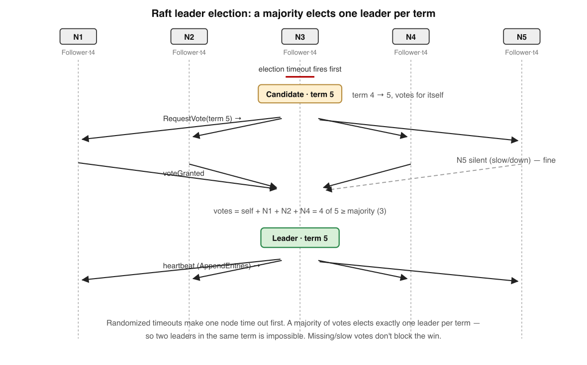
A 5-node Raft cluster electing a leader: one node's randomized election timeout fires first, it becomes a candidate in a new term, gathers a majority of votes, and becomes leader. Random timeouts dissolve split votes. (Ongaro & Ousterhout, 2014.)
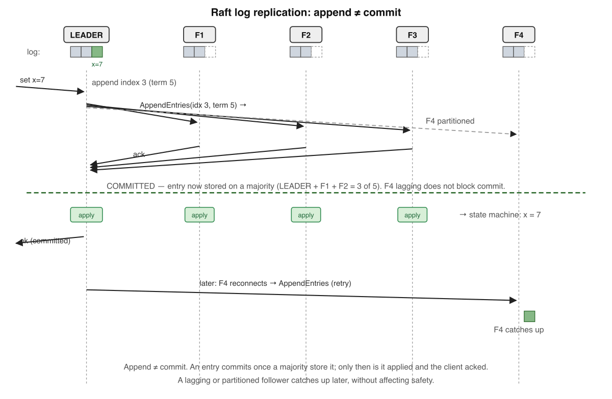
A leader replicating a log entry: it is committed only after a majority persists it, then applied to each node's state machine. The leader replies to the client only after commit — so an acked write can never be lost.
Consensus = 3 properties Agreement (no two decide differently) · Validity (decided value was proposed) · Termination (everyone eventually decides).
Majority quorum ⌈(N+1)/2⌉. Two majorities always share a node → two conflicting decisions impossible. N=3 tolerates 1, N=5 tolerates 2.
Why odd-sized A 4-node cluster needs 3 for majority, tolerates 1 — same as 3 nodes. The extra even node buys nothing.
Log Matching AppendEntries carries the prior entry's index+term; a mismatch is rejected and the divergent tail overwritten — committed history never lost.
✗ "Raft/Paxos tolerate any kind of node failure"
✓ They assume crash-stop, not lying; malicious nodes need Byzantine consensus (PBFT, 3f+1) (Castro & Liskov 1999)
🗳 Memory rule:elect by randomized timeout · commit on a majority · majorities overlap → two leaders / two decisions can't coexist.
Memory check
Three properties of consensus? → agreement, validity, termination
What does FLP prove? → no deterministic protocol guarantees consensus under async + 1 crash
When is a Raft entry committed? → once a majority persists it; then it's applied to the state machine
9
Partitioning / sharding — splitting without hot spots
Replication raises availability; partitioning raises the storage and write ceiling.
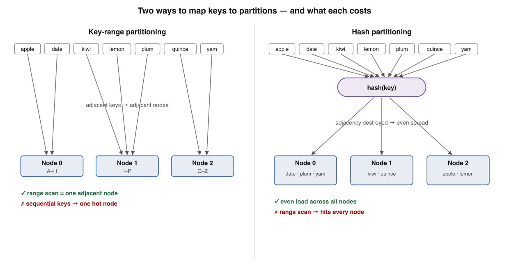
Two ways to map keys to partitions, and what each costs. Key-range keeps keys sorted (cheap range scans, but a write burst to one range overloads a node); hash scatters keys evenly (balanced load, but a range scan must hit every node).
Property
Key-range
Hash
Range scan
cheap — few adjacent partitions
expensive — scatter to all
Load distribution
uneven → hot spots
even by design
Example systems
HBase, Bigtable
Cassandra, Dynamo
Rebalancing — never mod Nhash(key) mod N moves almost every key when N changes. Use a fixed partition count, or consistent hashing (relocates ~K/N).
Hot spot / skew One celebrity key melts one partition; hashing can't help (same key hashes the same). Fix: random suffix splits the hot key across 100 sub-keys.
Request routing Forward via any node (gossip) · a routing tier · partition-aware client. The map is kept consistent via ZooKeeper/etcd.
Rebalance deliberately Auto-rebalance triggered by a node that merely looks dead (Lesson 1!) can start a data-movement storm.
✗ "Add read replicas to fit more data"
✓ Every replica holds the whole dataset; to raise the storage ceiling you must partition
🧩 Memory rule:range = cheap scans, hot spots · hash = even load, no scans; grow with fixed partitions or consistent hashing, never mod N.
Memory check
Failure mode of keying by timestamp + key-range? → all current writes hit one partition (write hot spot)
Why is mod N bad on growth? → changing N reassigns almost every key at once
How to relieve a celebrity's hot partition? → add a random suffix to split the hot key
10
Putting it together — the resilience toolkit
Every pattern is one trade: at-least-once delivery + idempotent effects = "effectively-once."
Retries: only retry idempotent ops · back off exponentially · add jitter to break lockstep · circuit-break sustained failures. Full jitter both minimises competing calls and finishes fastest. (Brooker, AWS Builders' Library.)
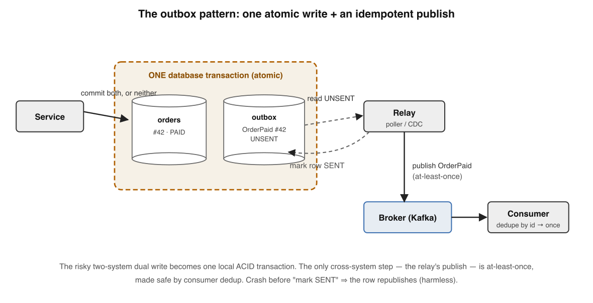
The outbox pattern turns a dual write into one atomic write + an idempotent publish. The service commits the business row and an outbox row in one DB transaction; a relay publishes unsent rows at-least-once and marks them sent.A saga models a cross-service operation as local transactions, each with a compensating transaction; on failure it walks back in reverse. It gives up isolation — the charge is briefly visible. (Garcia-Molina & Salem, 1987.)
Dual-write problem Writing DB and publishing as two steps: a crash in the gap leaves them disagreeing. The outbox collapses it into one atomic write.
Effectively-once There's no exactly-once delivery. Ship at-least-once delivery + idempotent effects. Always ask: exactly-once across which boundary?
End-to-end argument A correctness guarantee (dedup, idempotency) can only be enforced by the endpoints; the network is a best-effort accelerator. (Saltzer, Reed & Clark, 1984.)
Retry budgets Independent retries multiply down a chain (3×3×3 = 27 calls). Cap retries (~10% of volume) and retry at one layer. (Google SRE.)
✗ "TCP / the broker gives me exactly-once, so my handler is safe"
✓ Only your consumer knows it already processed event abc-123 — put dedup at the endpoint
🛡 Memory rule:retry idempotent ops with backoff+jitter · outbox the dual write · saga + compensate · enforce correctness at the endpoints.
Memory check
Why add jitter to backoff? → spreads synchronized retries so herds stop colliding
What does the outbox solve? → the dual-write problem — one atomic write + idempotent publish
Where must dedup live, and why? → at the endpoint; only it knows what it already processed
Interview — pick your bar
Answer out loud in ~60s, then reveal. Core = recall · Senior = trade-offs & failure modes · Staff = synthesis under ambiguity · System Design = open design round (a different axis, not a harder level).
State CAP precisely, then correct the most common misreading.
Hit these points: CAP = under a network partition you must choose Consistency (linearizability) or Availability — you cannot keep both → P is not optional, partitions happen, so the real lever is C-vs-A during a partition: CP blocks the minority side, AP serves possibly-stale reads → the misreading is "pick 2 of 3" as if a system is permanently one letter — CAP only speaks about partitions and says nothing about the healthy case → that's exactly the gap PACELC fills: Else (no partition), you still trade Latency vs Consistency → so a real label is two-part, e.g. PA/EL or PC/EC.
Name the consistency models from weakest to strongest and what each guarantees.
Hit these points:eventual — if writes stop, replicas converge; any stale read is legal meanwhile → read-your-writes / session — a client sees its own writes and monotonic reads within a session → causal — operations that are causally related are seen in order by everyone; concurrent ones may differ → linearizable — every operation appears to take effect atomically at one instant between invocation and response, as if on a single copy → rule of thumb: buy the weakest model your correctness actually needs, since each rung up costs latency and availability.
What is a quorum, and why does R + W > N matter in a leaderless store?
Hit these points: in a leaderless (Dynamo-style) store with N replicas, a write waits for W acks and a read gathers R responses → if R + W > N the read set and the most recent write set must share at least one node, so a read overlaps every acknowledged write and can return the freshest value → e.g. N=5, W=3, R=3 overlaps; W=2, R=2 does not → quorums tune the C-vs-A/latency trade: bigger W = more durable, slower writes; smaller R = faster, riskier reads → caveat: strict quorums still need read-repair / anti-entropy and don't by themselves give linearizability.
Name the three replication topologies and the price each pays.
Hit these points:single-leader — all writes to one node, replicate to followers; simple and linearizable-able, but the leader is a write bottleneck and a failover hazard → multi-leader — writes accepted at several leaders (e.g. multi-region); better write availability/latency, but concurrent writes create conflicts you must resolve → leaderless — any replica takes writes, quorums for correctness; great availability, but you own conflict detection (version vectors) and read-repair → the through-line: as you move away from one leader you buy availability and pay in conflict handling.
A payment call times out with no reply. What do you do, and why is "just retry" dangerous?
Hit these points: a timeout has four indistinguishable causes — lost request, slow node, lost reply, or dead node — so you cannot tell "didn't happen" from "happened, ack lost" → the charge may already have succeeded, so a blind retry double-charges → the fix is to make the operation idempotent with a client-generated key: at-least-once delivery + idempotent effect = exactly-once effect → pair it with bounded retries, exponential backoff + jitter, and a retry budget so you don't amplify an overload → red flag: treating a timeout as proof of failure.
Why is "exactly-once delivery" impossible, and what do we actually ship instead?
Hit these points: an unacked send forces a choice — resend (risk a duplicate) or don't (risk loss); there is no third door, it's the Two Generals problem → so "exactly-once delivery" over an unreliable network is unachievable → what we build is exactly-once effects: at-least-once delivery + an idempotent or deduplicating endpoint = effectively-once → always ask "exactly-once across which boundary?" — the guarantee is per consumer/store, not end-to-end magic → mechanisms: idempotency keys, dedup windows, transactional outbox to avoid the dual-write.
Two replicas accepted writes; which one wins? Walk me through the clock issue.
Hit these points: wall-clock timestamps on different machines aren't comparable — clock skew can make the later write carry the smaller timestamp → so last-write-wins by physical time silently drops a genuinely-later write → you need a logical notion of order: happens-before via Lamport clocks, or version vectors to actually detect concurrency rather than impose a false order → once concurrency is detected you either merge (CRDT/app-level) or surface siblings to the application → if you must use LWW, scope its data-loss risk explicitly and use it only where losing a concurrent write is acceptable.
You key a time-series table by timestamp and one node is melting. Why, and how do you fix it?
Hit these points: key-range partitioning by timestamp routes all current writes to the single partition holding the newest range — a moving write hot spot → fix options: hash-partition the key for even write spread (cost: range scans now scatter across partitions) or prefix/salt the key so recent writes fan out → never rebalance with mod N — adding a node remaps almost everything; use a fixed number of partitions or consistent hashing so adding a node moves only ~K/N keys → for read-heavy time ranges, consider a compound key (e.g. tenant + time bucket) so writes spread but scans stay local.
Events are "coming out of order." Diagnose it, then decide how much ordering to actually buy.
Hit these points: first ask which order is required — FIFO (per source), causal, or total — because they cost wildly different amounts → FIFO ⊂ causal ⊂ total; pick the lowest rung that satisfies correctness, over-ordering is over-engineering → causal order is enforceable locally with vector clocks and no coordination; total order needs consensus (a single Kafka partition, a replicated log) and is the expensive, throughput-capping one → diagnose by tracing whether the disorder is cross-partition (you chose total order but partitioned for throughput) or genuine concurrency → synthesis: partition for throughput where order doesn't matter, reserve a totally-ordered lane only for the keys that need it.
How does Raft avoid two leaders, and what does FLP have to do with it?
Hit these points: a node grants at most one vote per term and a leader needs a majority; any two majorities overlap in ≥1 node, so two leaders in the same term is impossible — that's the safety argument → FLP proves no deterministic protocol can guarantee termination in a purely asynchronous model with even one crash → Raft doesn't beat FLP; it sidesteps it by assuming partial synchrony (timeouts) for liveness and using randomized election timeouts to break symmetric split votes → the principal framing: safety always, liveness only when the network is eventually calm → so a permanently flaky network can stall progress without ever violating correctness.
How would you choose a failure detector, and why is "perfect failure detection" the wrong goal?
Hit these points: in an async network you cannot distinguish a slow node from a dead one, so any timeout-based detector is a tunable guess trading completeness (always suspect real failures) against accuracy (never falsely suspect) → aggressive timeouts cause false positives — needless failovers, re-elections, duplicate work; lax timeouts delay recovery → prefer adaptive detectors (e.g. phi-accrual) that output a suspicion level from observed RTT history instead of a hard boolean → pair detection with fencing tokens so a wrongly-suspected-then-revived node can't act as a stale leader → the staff move: don't chase perfect detection — design so a wrong suspicion is safe (idempotent work, fencing, leader leases), because wrong suspicions are inevitable.
Design-round framework — drive any distributed-systems prompt through these, out loud:
Place it on CAP/PACELC — what happens to each operation under a partition?
Replication & partitioning: leader topology, quorum (R/W vs N), hash vs range, rebalancing.
Failure handling: timeouts + backoff + jitter + retry budget; idempotency keys on every side effect.
Cross-service atomicity: transactional outbox for the dual-write; sagas with compensations (no 2PC across services).
Observability & ops: detect partitions, lag, hot spots; fencing tokens; how you test rare interleavings.
End-to-end argument: place each correctness guarantee at the layer that has the knowledge to enforce it.
Design an order-checkout flow across payment, inventory, and shipping that survives partial failure.
A strong answer covers: idempotency keys on every external side effect so retries don't double-charge or double-ship → bounded retries with exponential backoff + jitter and a retry budget to avoid retry storms → the transactional outbox so the DB state change and the event publish commit atomically (kills the dual-write) → a saga with compensating transactions (refund, restock) because you cannot 2PC across independent services → dedup at each consumer with a window comfortably exceeding the worst-case redelivery delay → choose consistency per step: inventory reservation may need strong/conditional writes, order history can be eventual → the end-to-end argument — confirm the charge with the payment provider's own idempotency, don't infer success from a timeout → name the trade-off: saga gives availability and loose coupling but exposes intermediate states, so model compensations and "stuck saga" alerts.
Design a globally replicated key-value store and state its consistency contract under partition.
A strong answer covers: start from the contract — do callers need linearizable reads or is causal/eventual acceptable? that single choice drives everything → partition the keyspace with consistent hashing (virtual nodes) so adding capacity moves only ~K/N keys and avoids hot spots; salt known hot keys → replicate each partition N ways across failure domains/regions; expose tunable quorums (R + W > N for read-overlap, lower for latency) → under a partition, declare the choice: CP (block the minority, stay linearizable) for a config/lock store, or AP (serve stale, reconcile later) for a cart → conflict handling for AP: version vectors to detect concurrency, CRDTs or app merge for resolution, read-repair + anti-entropy to converge → place it on PACELC and say it: e.g. PC/EC for a metadata store, PA/EL for a session cache → ops: detect partitions and replica lag, fence stale leaders with tokens, and test failover with fault injection → name the trade-off explicitly between availability and the strength of the read your callers can rely on.
Retrieval quiz — answer before peeking
Effortful recall beats re-reading. Pick one; the right answer highlights with a one-line why.
Q1. Your call times out with no reply. How many fundamentally indistinguishable causes are there?
Q2. "Exactly-once delivery" over an unreliable network is best understood as…
Q3. A leaderless store has N = 5. Which W, R guarantees a read overlaps every recent write?
Q4. CAP forces a choice between Consistency and Availability…
Q5. In Raft, a log entry is committed when…
Q6. A celebrity account melts one partition even under hash partitioning. The standard fix is to…
Reconstruct the field from a blank page
Write the ten lessons in order, one line each, with nothing on screen. Then reveal and compare — gaps are your next drill.
1 Can't tell slow from dead (4 causes; Two Generals) · 2 at-least-once + idempotency = exactly-once effect ·
3 no global clock → happens-before / vector clocks · 4 broadcast ladder; total order ≈ consensus ·
5 leader / multi-leader / leaderless; R+W>N · 6 eventual→session→causal→linearizable ·
7 CAP (C-or-A under partition) + PACELC (L-or-C else) · 8 FLP impossibility + Raft (majority overlap) ·
9 range vs hash; consistent hashing; hot spots · 10 retries+jitter · outbox · saga · end-to-end argument.
I'm your teacher — ask me anything. Say "grill me on distributed systems" for mixed
no-clue questions, drop a real system and I'll place it on the CAP/PACELC and consistency spectrums with you,
or ask for a worked space-time diagram. Want the next lesson — spaced, interleaved drills? Just ask.
★ Cheat sheet — buzzword → engineering
Mental models: can't tell slow from dead · timeout = a guess · exactly-once = at-least-once + idempotency · no global clock → cause not time · FIFO ⊂ causal ⊂ total · R+W>N overlaps · climb consistency only as far as needed · P is mandatory (C-or-A under partition) · majorities overlap · range vs hash · outbox kills the dual write · enforce correctness at the endpoints.
Translation table
Buzzword
What it actually is
Eventual consistency
if writes stop, replicas converge — meanwhile any stale read is legal
Quorum
R + W > N so read and write sets share a node
CP / AP
under partition: block the minority / serve stale data
PACELC
if Partition: A-vs-C; Else: Latency-vs-Consistency
Consensus
agree on one value despite crashes; ≈ total-order broadcast ≈ a replicated log
Raft commit
entry persisted on a majority, then applied to the state machine
Consistent hashing
nodes & keys on a ring; add a node, move only ~K/N keys
Exactly-once
marketing for at-least-once delivery + idempotent effects
Outbox / saga
one atomic local write + relay / local txns + compensations
Three instincts to install
① At every network boundary ask "what if this times out but succeeded?" ② Buy the weakest guarantee (delivery, ordering, consistency) your correctness actually needs. ③ Put each correctness guarantee at the layer that has the knowledge to enforce it (the end-to-end argument).
★ Review guides & what to read next
5-min (weekly) Don't re-read — recall. Say the one hard truth; name the four causes; redraw the broadcast ladder and the R+W>N overlap; recite CAP-vs-PACELC; state when a Raft entry commits.
30-min (when stalled) Blank-page reconstruct all ten lessons; re-derive why each builds on Lesson 1; then place one real database (CP/AP? PACELC? which consistency model? partitioning scheme?).